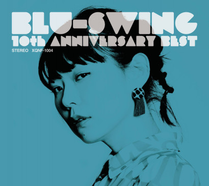

All About Huay
The closest a person can get to perfection is through their CV.
Origin
>> A spring 2001 baby from Reston Virginia. Daughter of Taiwanese and Vietnamese immigrant parents with two siblings.
Dreams
>> To make an impact on the world through my research - accessible healthcare and mathematical modeling.
I also aspire to grow as an artist and writer.
Current Interests
>> Lately I've been involved in a number of machine learning projects - more specifically the design of neural network models; however, I'm less interested in designing models to utilize our stores of data, rather I'm more intrigued on determining efficient data representations and reducing redundancies. I'm into minimalist ML algorithms.
On the artistic side of things, I am slowly becoming a better singer. More quickly, I'm improving my writing skills through setting out to finish my longer essay ideas.
Featured Skills
>> Not to toot my own horn, but I'm a phenomenal cook.
Fun and Boring Facts
>> While people may mistake the mark on my face for a birthmark, I will support the narrative that I know my way around the streets...of the suburbs of northern Virginia.
 Yeah I'm a dirty Genshin player, and Klee is my top tier character;
Yeah I'm a dirty Genshin player, and Klee is my top tier character;Favorite Band! Blu-Swing :)
Apologies for this wonky image-caption placing.